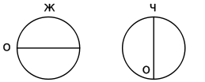
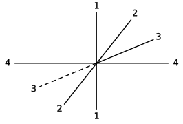
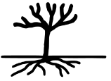

Беседа 744 от 3877 · Беинса Дуно
Противоречията като необходимост при всяко растене
Бог на Любовта не е Бог на мъртвите, а Бог на живите!
Прочетоха се 10 от работите върху темата: „Разлика и прилика в характерите и философията на Августина и Толстоя“.
Тема за следния път № 26: „Отличителни черти на човешкия дух, на човешката душа и на човешкото тяло“.
Учителя: Да излезе някой от учениците на дъската и да напише четири числа, а именно числата 1, 2, 3, 4 и да отбележи математически, че числото 2 е два пъти по-слабо от едно; числото 3 е три пъти по-слабо от 2 и числото 4 е четири пъти по-слабо от 3.
Ученикът: Ще означим силата на единицата с f. Тогава ще имаме 1; 2; 3; 4 – f/f, f/2, f/6, f/24.
Учителя: Къде се намират най-благоприятните условия?
Ученикът: В единицата.
Учителя: Тъй, единицата представлява пролетта. Енергията през пролетта е най-силна, понеже асимилирането в растенията е най-силно. Енергията през лятото отслабва, тя е два пъти по-слаба. През есента е три пъти по-слаба, а през зимата – четири пъти по-слаба. Това е закон. В единицата физическият свят е най-силен по качество. В единицата чувствата почват да се засилват, а физическият свят е по-слаб. Следователно, когато физическият свят отслабва, чувственият свят се усилва. Законът действа и по-нататък. Когато чувственият свят отслабва, умственият свят става по-силен. Когато пък чувствата са много силни, човек не може да прояви умствена деятелност, там той е слаб. Ако на известно растение турите изобилно вода, то не може да расте, неговото развитие спира, но ако не го поливате, то пак не може да расте. Значи, когато условията за чувствата станат неблагоприятни, колкото по-големи мъчнотии среща човек в чувствата си, толкова по-големи условия има за ума. Следователно, за да се развие човек умствено, той трябва да претърпи едно вътрешно подпушване на своите чувства. И често, когато човек не може да разреши физически най-дълбоките въпроси, той става мистик, религиозен. Някои причисляват това към причинния свят.
В единицата хората се хвалят със своето тяло. Те се раждат материалисти, военни личности и други. Във второто положение, при двойката, те се раждат актьори, хора дадени в чувствата, които постоянно се менят и на които не можеш да разчиташ. В числото три срещаме хора на ума. А след учените идват мистиците и мъдреците.
Представете си, че Ж е светът на животните, а Ч е светът на човека. Светът на животните има 90 градуса наклон към земята, оста им е хоризонтална. Те са поставени хоризонтално на слънчевите лъчи, под ъгъл 180 градуса, и затова възприемат слънчевите лъчи чрез гръбначния мозък.

Сега, запример, представете си, че ви се яде мед. Такова едно желание е много естествено; не е грешно да ви се яде мед. Минавате покрай една къща с мед, но медът не е ваш. Какво ще се зароди във вас? – Най-малкото, ще се яви у вас желание да вкусите от този мед. Отишло едно дете да купува мед, но забравило как се казва. Питат го: Какво искаш? – Мама ме прати за нещо, но забравих какво беше. – Гледа, гледа, намира кацата с меда, бърка вътре с пръста, изважда го и го туря в устата: От това искам. Питам: такава една постъпка към коя категория ще я подведете? Това дете, като го пращала майка му, не внимавало какво му казва, мислило си друго нещо и забравило името на меда. То мислило да си поиграе из пътя; неговият ум не взимал никакво участие в това, което майка му говорила. Може ли това дете да се счита за интелигентно? И то, преди да види кацата, се намерило пред една мъчнотия. Пред него веднага изпъква майка му, която ще го бие, като се върне в къщи. Страхът заработва в него, то си спомня жуженето на пчелите и в този момент в него се събужда един животински навик, вследствие на който търси начин да намери предмета, който майка му иска. Та казвам: страданията, мъчнотиите в света, които идват, ви заставят като това малко дете да намерите меда. Като не можеш да намериш нещо по естествения път, ще го намериш по обратния път, но с повече страдания, с повече неприятности. Допуснете друго положение. Да кажем, че това дете не беше толкова досетливо и не можеше да намери меда, мислите ли, че като се върне в къщи, ще каже истината на майка си? – Ще излъже. Защо ще я излъже? Интересна е тук психологическата страна на въпроса. Отде се явява в това дете желанието да излъже майка си? Майка му го е родила, отгледала, възпитала, защо то се страхува от нея, та трябва да я лъже? Децата въобще най-много лъжат майка си и баща си. Защо? Ето де се крие причината: когато един учител има погрешен метод на преподаване, нали той го предава и на учениците си? – Предава го. По същия закон, по лъжлив начин майката предава известно свое състояние на детето си и това учение, като се приложи в живота, ще засегне най-първо нея, за да вади тя лошите последствия на своя метод. Въобще у тия деца които лъжат, горната част на главата им е тясна шилеста; съвестта им не е развита. Ще знаете, че при всеки импулс да говорите истината вие развивате известна област на главата си. Запример, ако искате да бъдете смели, ще се развие една малка част от задната страна на черепа. Всички стремежи, които човек има, развиват разни части от мозъка. Въображението, например, прави челото по-голямо.
Във всеки клас трябва да има ученици, у които са развити различни сили и способности. Разнообразие трябва да има! Учениците могат взаимно да си предават и добрите, и лошите качества. Способните ученици предават своя импулс на по-слабите. Някои от учениците пък имат нужда от морални качества. Затова в един клас трябва да има ученици с развити морални качества. Няма нищо по-лошо от еднообразието. Затова едни трябва да бъдат умствено силни, втори да бъдат музикални, трети да бъдат смели, четвърти да обичат Истината и т.н. Всички тия качества се взаимно допълнят. Засега в цялото човечество работи колективният, великият човек чрез своите единици. Един ден той ще ги съедини и ще образува едно цяло. Един ден ще се събере и образува едно отлично, красиво тяло. Вие трябва да привикнете да се анализирате добре. Например, някои от вас обичат да полъгват. Много естествено е, но един възрастен човек трябва да избягва лъжата. Има хора, свършили и по четири факултета, пратиш ги да изследват някой научен факт, те все ще го преувеличат. И виждаме, че техните теории са все криви истини. Много учени хора изопачават научните си данни. Вземете един богослов: за да докаже някоя духовна истина, той първо ще я изопачи. Не, всякога трябва да констатираш една истина тъй, както си е. Няма да изнасилваш един факт, за да докажеш друг. Фактите са свързани, те взаимно се подпомагат.
Най-първо хората нямат искреност. Учените хора, духовните хора трябва да имат съвест, да не лъжат. Те, обаче, нямат смелост, у тях е развит страхът. Има много учени хора, много богослови, даже хора на новото учение, които имат страх и вследствие на това не могат да изкажат рязко една истина. Те ще се спрат и наполовина ще я кажат. Някой съдия седи, мисли, прави своята резолюция, но ще каже истината наполовина.
Та първото нещо: ще знаете, че всички хора имат слабости. Затова вие в себе си ще се стремите да разсъждавате правилно. Туй, което градите, то е заради вас. Ако направите една погрешка, тя не е заради мене, вие ще пострадате. Пък ако направите едно добро, то е за ваша полза. Всеки човек причинява или полза, или вреда на себе си, а косвено неговата погрешка може да принесе вреда и на другите. Същото е и с доброто, което той прави: косвено то може да принесе добро и на другите. Запример, ако изкарам сега някой от вас на дъската и му задам един мъчен въпрос, на който не може да отговори, той веднага ще се почувства унизен и засрамен. А като не отговаря, другите ще му се смеят. Не е въпросът, че те знаят повече, нито това дали той знае. Въпросът е да се обясни една истина.
Първото нещо: у вас трябва да се създаде навик да обяснявате Истината в нейните най-малки проявления. Не се стремете да изяснявате великите проблеми в живота. Това е един грамаден капитал. Търсете всякога микроскопическите факти и за тях се дръжте! Малките величини са отлични. Ако един човек го мързи да бръкне с ръката си в джоба, за да даде някому пет стотинки, той никога няма да привикне да дава. От петте стотинки той ще се научи да дава и по-много.
Сега, от този материал, който преминавате, вие още не сте се спрели върху ония окултни положения, които можете да приложите в живота, а трябва да ги прилагате! Запример, трябва да знаете в даден момент дали някой човек ви говори Истината или не. После, правете разлика между вяра и лековерие. Вие не трябва да бъдете лековерни. Например, вие сте тръгнали в един път и някой ви казва: знаете ли, че този път не е правият път? Вие сте тръгнали по крив път. И вие веднага се разколебавате. Защо? – Вие изведнъж приемате тия думи за верни, без да ги проверите. Това е лековерие.
На какво се дължи отклонението на две линии? Как се е образувал ъгълът на отклонението?

Ако разгледате работата на тия четирима души 1, 2, 3, 4, според както е определена посоката на тяхното действие в чертежа, могат ли те да вършат заедно работа? (– Всеки поотделно може да върши работа, но между тях няма съгласие.)
Сега ние засягаме един закон, който съществува в природата. Какъв е този закон? Да кажем, че имате едно семенце. Какви са неговите възможности? – Да расте нагоре и надолу. То среща надолу едно противоречие – почвата, която му препятства, обаче в нея се образуват коренчетата на това растение. По същия начин се образуват нагоре клонищата.

Сега хората се делят на партии. Някои хора не приемат вашите убеждения, но не се безпокойте от това. Тия хора са едно малко клонче на същото дърво, което ще отиде най-много 3–4 метра далеч от дървото и пак ще се върне назад. Като дойде вятърът, ще се сблъска с друго клонче, което ще го пита: какво искаш от мен? – Нищо не искам, вятърът ме докара тук, сблъскахме се – нищо повече! И тъй, само в плодовете на едно дърво могат да се примирят противоречията. Следователно не се смущавайте от това, как се развива сега външният свят. Трябва да знаете, че вие не можете да измените реда на нещата. Само в плода на дървото вие може да примирите всички противоречия. Затова трябва да се стремите към идеален, духовен живот. Всяко дърво трябва да има плод във вас. И, както казва Писанието: „От плодовете им ще ги познаете“. Който има плод, ние познаваме, че той е примирил противоречията, а който няма плод, наричат го безплодно дърво. Това показва, че този човек още не е намерил закона на примирението. Значи, в плода, в доброто, което правиш в света, трябва да примириш всички противоречия на твоя физически, чувствен и умствен живот и да преминеш в причинния свят. Защото противоречията на физическия свят не са противоречия и на умствения свят. Линиите 1, 2, 3, 4 в чертежа показват движението на тесаракта. Когато ъглите се увеличават или намаляват това представлява движението и посоката на тесаракта. Помнете и следното правило: хора, които имат най-големи противоречия в живота си, са най-силни. Силните хора имат най-големи спънки. Колкото по-големи мъчнотии има в живота си, това показва,че природата към вас е по снизходителна. Това дете може да се оплаква, че го държат затворено, обаче то учи. Следователно някой път и природата постъпва спрямо тебе като тази майка: хване те, тури те в някоя стая и ти казва: ще учиш!
Важното за вас е да се стремите чрез плода на вашия живот да примирявате противоречията. И ако ги примирите така, вие сте на прав път. Приложете следното правило: щом направите една погрешка, изправете я веднага! Всяка вечер, като се върнете в къщи, дайте си отчет как сте прекарали деня, какви погрешки сте направили и ги отбележете. Така ще намерите един начин за поправянето им. Който иска да успее в живота, непременно трябва да изправя своите погрешки. Това е цяла наука. Спрямо себе си вие сте много снизходителни, казвате: условията са такива. Или: само аз не съм, който правя погрешки, и другите хора правят погрешки… Оправдавате ли се по този начин, един ден вие ще се намерите в една задънена улица. Защото погрешки в живота има, но трябва да се изправят. Ако някой ви каже, че можете да живеете без погрешки, той не говори истината. Погрешки ще дойдат, въпреки всичкото ви знание; и много да знаете, погрешки пак ще дойдат. Пък ако нямате свои погрешки, чужди погрешки ще ви турят и пак ще ги пренесете. Но спазвайте правилото, което ви казах: всяка вечер ще се отделиш като учител и ще се поставиш като ученик пред този учител. Ще се извикаш пред него и ще кажеш: спри се пред мен! Ти знаеш ли какво прави днес? Питам ви: седели ли сте така на изпит пред себе си? Ученикът ще почне да се оправдава. Учителят, обаче, ще бъде напълно справедлив, ще пита: защо направи тези работи? И ти, като ученик, трябва да си дадеш един правилен, истински отчет, да намериш причините, побужденията, поради които си направил тази погрешка. Щом се покажеш малко снизходителен към себе си, това е вече лицеприятие, ти изгубил. Физическият човек е като дете. Защо майките имат уважение пред децата си? Защото детето гледа майка си дали говори истината или полъгва; щом я хване, че лъже, то вече няма страх от нея.
И тъй, щом вашият обективен ум схване, че вие сте някъде слаб, казва: ти полъгваш. Туй е един неизменен закон в природата. Запример, ако ви туря 50 кг. Злато на гърба и после взема да се моля за вас да преминете една дълбока река благополучно,правилно ли ще е? Питам: уверен ли сте, че с 50 кг злато на гърба си, земята няма да се продъни, няма никаква опасност. Опасността е във водата. Като дойдете в една по-рядка среда, там ще фалирате. Трябва да знаете, че в живота си вие ще минете през една такава дълбока река. При това и мост няма да има. Ще кажете: с лодка. И лодка няма да има. Тогава? Представете си, че носите 50 килограма пясък на гърба си и трябва да минете една река. Какво ви коства да оставите този пясък на брега, да минете реката свободно и като излезете на другия бряг – там пак има пясък, да вземете от него други 50 килограма? И като дойдете до друга река, оставете пясъка, минете реката и после пак си вземете пясък, колкото искате.
Закон е: ще бъдете много взискателни спрямо своите погрешки. Защото, ако не изправите погрешките си, те след време ще ви създадат такива страдания, каквито не сте сънували. Забележете, при правилното страдание на душата на е страхът, който трябва да играе роля, но правото. В света съществува само едно право. Ние не казваме, защо трябва да станат тия неща? Те ще станат, но трябва да се извършат правилно. Ако са погрешно направени, трябва да се изправят. Да кажем, че някои нишки в мозъка трябва да растат на дължина; при това обемът на известни клетки трябва да се увеличи. Туй трябва да стане! Значи това е един бюджет, предвиден от самата природа. И енергията, която е потребна, ще се изпрати да работи във вашия мозък. Допуснете сега, че вашият мозък не може да издържи на този напор, както една жица не може да издържи на силния ток в някоя електрическа инсталация. Какво става тогава? – Жицата изгаря. Има ли между вас някой електротехник, да каже кога изгаря жицата? (– Когато силата на тока мине определения размер и напрежението е по-голямо, отколкото жицата може да издържи.) Следователно човешкият мозък трябва да се инсталира правилно. Там трябва да турите най-добрата жица, не каква и да е, а такава, която може да издържи всички напрежения. Затова, закон е: каквото вършите, трябва да бъде добре направено. И това добре направено дело най-първо ще се отрази върху строежа на тялото.
Та някой път дори изкуствено трябва да си създавате мъчнотии. Забелязано е, че ония деца, които от малки страдат от една, втора, трета и от ред още болести, ако след това им дойде някоя болест, те не умират, а издържат, организмът им става стабилен. Онези деца пък, които никак не са боледували, при първата болест, която им дойде на втората година, заминават за онзи свят, болестта ги задига. Човек, който страда постоянно, по-лесно може да издържа на болести, а който никак не е боледувал, при първото заболяване още си заминава. Тъй че страданията са калене на организма. Разбирате ли този закон? Това е закон, от който вие не можете да се избавите. Щом мислите съобразно тия закони, и вашата мисъл ще бъде в съгласие с природата. Това съгласие ще даде сила на ума ви, да мислите по-правилно, а при това ще ви избави от много морални терзания. Защото невежеството носи безброй страдания, вземете, запример, една микроскопическа искрица. Тя при дървата не е опасна, но при взривните вещества става опасна – зависи де ще я поставите.
Значи, всяка вечер ще си направите баланс на всичко, което сте прекарали през деня. И ще си поставите един идеал, който искате да постигнете. Човек трябва да работи над себе си! Сега всички хора въобще, особено фаталистите, казват: каквото дойде! Това прилича на ония дървета, които са пуснати в някоя река и тя ги блъска тук-там из водата, докато най после ги изхвърли на брега. Това, обаче, не е разрешение на общите задачи.
И тъй, коя е основната мисъл на тази лекция? Погрешките да се изправят с време.) Първоначално е нямало погрешки. Друго? (Противоречията трябва да се примирят в плодовете, които ще изработим.) Най-първо противоречията произтичат от силите на природата.
Сега, аз бих ви задал да пишете върху следната тема: „Кой е най-добрият начин за запознаване?“ Според вас, кой е най-практичният метод за запознаване с някого? Кога се запознават хората обикновено? (– Когато направим някому добро.) Представете си, че двама души пътуват заедно. Торбата на единия пътник се изпразва и той цели три дни гладува, след което се решава да запита втория: Нямаш ли нещо за ядене? От три дни не съм ял нищо. – Имам. Те започват да приказват, разговарят се. Вторият пътник дава на първия да яде, после си подават и двамата ръка и си казват: Хайде на добър път! Единият тръгва на една страна, другият – на друга. Учениците как се запознават? Някой от тях не знае нищо по математика, а пък учителят ще го изпита. Той казва на един от съучениците си: Я ми разкажи урока по математика, не разбрах как става това нещо! Седнат двамата: единият разправя, другият слуша – и тъй се запознават. Ако и двамата бяха способни, щяха ли да се запознаят. Нямаше. Но ако и двамата се намират пред една обща опасност, например, ако и двамата са гладни или се намират в чужд град, те ще се запознаят. Тогава от тия заключения ние изваждаме следния закон: общите нужди, които се появяват в живота, сближават хората. Тия нужди могат да бъдат от физически, умствен или духовен характер, но те всякога сближават хората. И тъй, щом се появи някоя нужда във вашия живот, трябва да знаете, че тя е на мястото си, тя ще ви сближи с някой човек. Тогава не изпущайте случая. Всяко сближение, станало по един естествен път, е Божествено, и то ще принесе своята полза. Двама души, които нямат нужда един от друг, не могат да се сближат.
Ще ви дам едно обяснение на въпроса защо трябва да има мекота между двама души в живота. Представете си, че турят двама души в един сандък, пълен с течност. Сандъкът е закован добре и тъй те пътуват по железницата. Как мислите, като се бълникат вътре, ще излязат ли здрави? Ако са шишета, нали трябва да има стърготини помежду им, за да няма търкане? Щом кажем, че трябва да бъдем меки, ние подразбираме, че сме в сандъка и пътуваме. Щом не пътуваме, може и без мекота. Само шише няма нужда от стърготини, но пращаш ли го с други шишета от един град в друг, непременно трябва да има мекота помежду им. Когато кажем, че трябва да бъдем меки, милостиви, подразбираме, че помежду ви трябва да има нещо, за да не става голямо търкане. (– Ако те са поставени в мляко, ще избият масло.) Тъй, масло ще се избие. Да кажем сега, че онзи, който е направил тенекията, оставил я с много малък отвор и това масло, като се избие, запушва отвора и не може да излезе навън. Какво ще правите тогава? (– Отворът трябва да бъде много голям.) Ето защо, човек трябва да бъде щедър, с голяма уста. Значи щедростта е голяма уста, от която можем лесно да извадим избитото масло.
И тъй, разбрахте вече какво нещо е мекотата и защо е необходима в живота ви. Като ви турят мекота, тогава не питайте: Без тази слама не можем ли? Или не казвайте: Да се махне тази слама! Двама души, които са меки, те сами се поотдалечават един от друг и между тях не се произвежда това търкане. И тогава, щом искате да се скарате с някого или ви дойде някое противоречие в живота, кажете: В сандък съм, чакай да видя дали има стърготини, та да не стане някоя катастрофа с мен. При това вижте дали устата ви е голяма. Ако сте захаросан мед, как ще излезете из тясното гърло? Хората са намерили и в този случай едно изкуство: турят съда във вряла вода, за да се разтопи медът. В живота, обаче, когато устата е малка, медът се изважда много мъчно, понеже там процесът е много сложен.
– Бог на Любовта не е Бог на мъртвите, а Бог на живите!
31. лекция на Младежкия окултен клас,
държана от Учителя на 18.V.1924 г. в гр. София